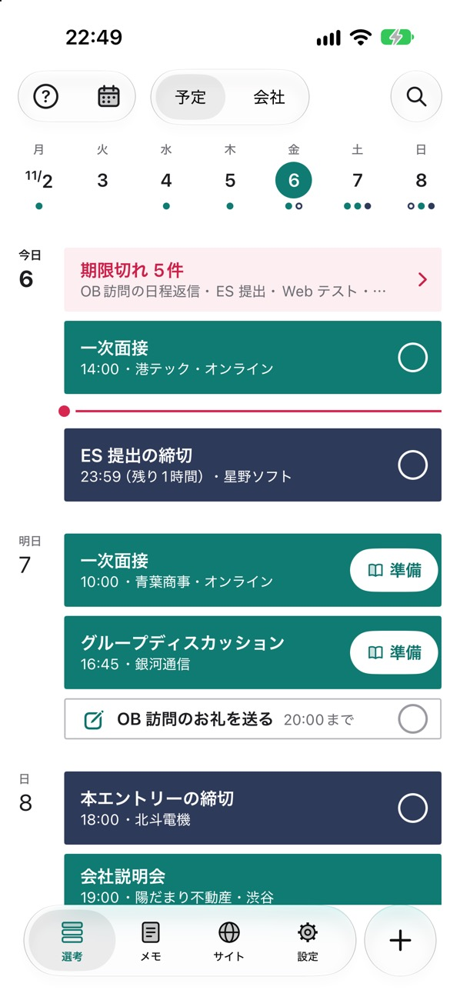
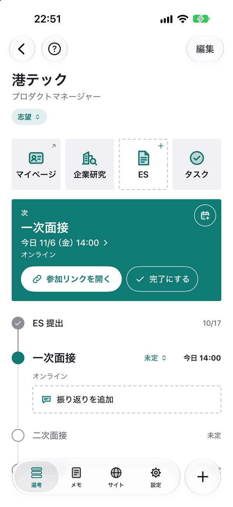
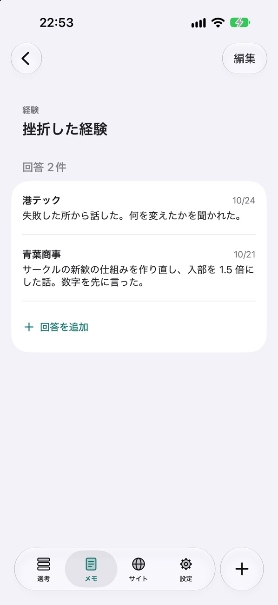
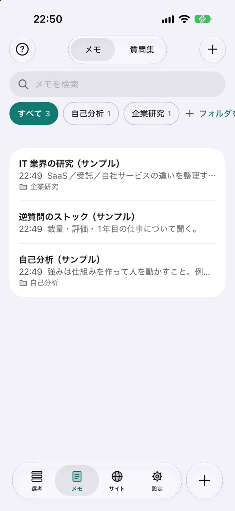
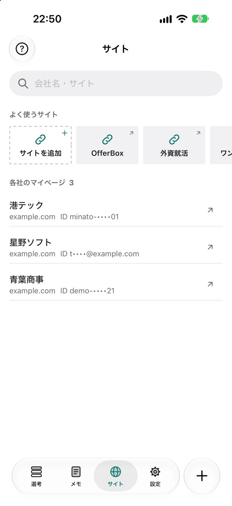

就活Hub iPhone アプリ
開いた瞬間に、
次にやることが分かる。
今日
就活の締切・面接・説明会を、日付順の予定表で。
無料・ログインなし・iOS 26 以上
散らばった予定を、
1つの予定表に。

面接や説明会は緑、締切は紺で並びます。過ぎた締切は、一番上に赤い1行で出ます。
締切
締切が近いと、
残りの時間が出る。
残り1時間
ES 提出の締切 23:59・星野ソフト
締切まで24時間を切ると、予定表に残りの時間が出ます。締切は右の ○ を押すと済みにできます。
会社のページ
会社ごとに、
選考の流れと次の予定。
1タップで参加リンク1タップでマイページES・企業研究

いちばん上に次の予定と「参加リンクを開く」、その下に ES 提出から最終面接までの流れが並びます。
質問の棚
聞かれた質問を、
会社をまたいでためる。

1つの質問に、会社ごとの答えが並びます。面接の後に残した「次に直すこと」は、次の面接の準備の画面に出ます。
メモとサイト
メモも、
マイページの ID も。


企業研究や自己分析のメモと、各社のマイページを1か所に。マイページは1タップで開けます。
安心して使えるように
ログインなしデータは自分の iCloud に保存し、同じ Apple Account の iPhone 同士で同期します。
無料いまの版は、すべての機能を無料で使えます。広告もありません。
iPhone で読み取り貼り付けたメールの読み取りは、iPhone の中で行います。
Web版から移れますWeb版の「エクスポート（JSON）」を、アプリの取り込みで選びます。
今日やることに、
1つ足してください。
無料・ログインなし・iOS 26 以上